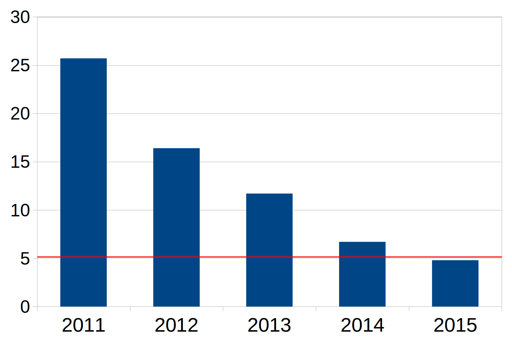

AlexNet · VGG · GoogLeNet · ResNet · EfficientNet · ViT · Tinh chỉnh
Trường ĐH Công nghệ · Đại học Quốc gia Hà Nội
Bài toán phân loại ảnh, ImageNet, cách đọc một kiến trúc.
AlexNet, VGG, GoogLeNet, ResNet.
EfficientNet và Bộ biến đổi thị giác.
Học chuyển đổi, tinh chỉnh, danh sách kiểm tra dự án.
Mục tiêu không phải học thuộc từng tầng, mà hiểu quyết định thiết kế phía sau mỗi kiến trúc.
224×224×3 điểm ảnh
Dự đoán cao nhất
Phân loại ảnh là bài nhập môn kinh điển của thị giác máy tính hiện đại, nhưng nó kéo theo hầu hết ý tưởng nền tảng.
Bài 9 đã trả lời: CNN học đặc trưng ảnh như thế nào. Bài này hỏi sâu hơn: kiến trúc nào làm CNN mạnh lên?
Vì sao các mô hình phân loại ảnh tiến hóa từ mạng tích chập sâu hơn sang mô hình hiệu quả hơn và bộ biến đổi?
Sau buổi học, sinh viên có thể:
Điểm mới của AlexNet, VGG, GoogLeNet, ResNet.
CNN cổ điển với EfficientNet và ViT theo độ chính xác, chi phí, dữ liệu.
Chiến lược học chuyển đổi phù hợp với kích thước dữ liệu.
Quy trình tinh chỉnh cơ bản cho một bài toán phân loại ảnh mới.
Đầu vào · Đầu ra · ImageNet · Độ đo · Cách đọc kiến trúc
Trong thực tế ta thường thay đầu phân loại, còn mạng xương sống lấy từ mô hình đã huấn luyện trước.
ImageNet không đại diện cho mọi miền, nhưng là nền tảng học chuyển đổi quan trọng nhất trong nhiều năm.

Sai số của mô hình thắng cuộc giảm nhanh trong giai đoạn 2011-2015.
Kết quả trên ImageNet là chuẩn so sánh quan trọng, không phải kết luận chung cho mọi miền ảnh.
Nguồn ảnh: Wikimedia Commons, “Classification of images progress human.png”, CC0.
Đúng nếu nhãn có xác suất cao nhất là nhãn thật.
Khắt khe hơn, dùng nhiều khi triển khai.
Đúng nếu nhãn thật nằm trong 5 dự đoán cao nhất.
Phù hợp ImageNet vì có các lớp gần nghĩa.
Các bài báo cũ hay báo lỗi hạng 5; bài toán ứng dụng thường quan tâm hạng 1, F1 hoặc hiệu chuẩn xác suất.
Bao nhiêu tầng có tham số?
Số tham số, phép tính, bộ nhớ, độ trễ.
Tích chập 3×3? Inception? Phần dư? Chú ý?
Tầng nối đầy đủ lớn hay gộp trung bình toàn cục?
Một kiến trúc tốt là sự cân bằng giữa độ chính xác, chi phí và khả năng huấn luyện.
AlexNet chứng minh CNN lớn huấn luyện được; ResNet chứng minh mạng cực sâu huấn luyện được; ViT chứng minh cơ chế chú ý có thể thay thế tích chập khi dữ liệu và tiền huấn luyện đủ lớn.
AlexNet · VGG · GoogLeNet · ResNet
Thông điệp chính: học đặc trưng đầu-cuối thắng quy trình đặc trưng thủ công.
Khi dữ liệu đủ lớn, đặc trưng học được thường vượt đặc trưng thiết kế thủ công.
VGG cho thấy: sâu hơn + thiết kế đều có thể rất mạnh, dù chi phí tham số lớn (VGG-16 khoảng 138 triệu tham số). VGG-19: có 3 khối gồm 4 lớp tích chập (khoảng 144 triệu tham số).
25C² tham số
1 lần phi tuyến
18C² tham số
2 lần phi tuyến
Cùng vùng nhìn 5×5, nhưng tích chập nhỏ hơn vừa tiết kiệm tham số vừa tăng khả năng biểu diễn.
Thông điệp chính: không chỉ “sâu hơn”, mà còn phải “hiệu quả hơn”.
Sơ đồ đầy đủ của GoogLeNet (22 lớp có tham số, khoảng 6,8 triệu tham số): nhiều khối Inception nối tiếp, hai bộ phân loại phụ khi huấn luyện, và bộ phân loại cuối dùng gộp trung bình toàn cục.
28×28×192 → 5×5×32
nhiều phép nhân
1×1 giảm 192 → 16 kênh
rồi mới 5×5
1×1 conv trộn thông tin theo kênh và giảm chi phí trước các conv lớn.
Nhiều tham số nằm ở các tầng nối đầy đủ.
Dễ quá khớp, tốn bộ nhớ.
Dùng gộp trung bình toàn cục trước bộ phân loại.
Ít tham số hơn rất nhiều.
Gắn sau Inception 4a và 4d trong huấn luyện.
Tăng tín hiệu gradient cho các tầng giữa; khi suy luận thường bỏ đi.
GoogLeNet giảm phụ thuộc vào tầng nối đầy đủ lớn, đồng thời dùng Aux để hỗ trợ huấn luyện mạng sâu.
ResNet biến câu hỏi từ “có thể huấn luyện mạng 20 tầng không?” thành “GPU/bộ nhớ cho phép sâu đến đâu?”.
Thay vì học trực tiếp \(H(x)\), khối học:
\[\mathcal{F}(x) = H(x) - x\]
Đầu ra: \(H(x) = \mathcal{F}(x) + x\)
Kết nối tắt cho đạo hàm đi qua nhiều tầng dễ hơn, giúp huấn luyện mạng rất sâu.
Dễ huấn luyện, dễ tinh chỉnh, có nhiều biến thể.
Dùng cho phân loại, phát hiện, phân đoạn.
Nhiều mô hình mới vẫn so với ResNet-50.
ResNet-50 sâu hơn ResNet-34 nhưng dùng nút cổ chai (bottleneck) để giữ chi phí tính toán hợp lý.
| Kiến trúc | Loại khối | Số khối theo stage | Số tầng | Số tham số xấp xỉ |
|---|---|---|---|---|
| ResNet-18 | basic block | 2, 2, 2, 2 | 18 | 11,7 triệu |
| ResNet-34 | basic block | 3, 4, 6, 3 | 34 | 21,8 triệu |
| ResNet-50 | bottleneck | 3, 4, 6, 3 | 50 | 25,6 triệu |
| ResNet-101 | bottleneck | 3, 4, 23, 3 | 101 | 44,5 triệu |
| ResNet-152 | bottleneck | 3, 8, 36, 3 | 152 | 60,2 triệu |
Các số tham số là xấp xỉ cho phiên bản ImageNet-1K phổ biến; khác biệt nhỏ có thể xuất hiện tùy thư viện cài đặt.
| Kiến trúc | Ý tưởng chính | Đổi lại | Bài học |
|---|---|---|---|
| AlexNet | CNN lớn + GPU | Tầng nối đầy đủ rất nặng | Học đầu-cuối thắng đặc trưng thủ công |
| VGG | Nhiều Conv 3×3 | Tốn tham số | Thiết kế đều, sâu hơn |
| GoogLeNet | Inception + 1×1 | Phức tạp hơn | Hiệu quả tính toán quan trọng |
| ResNet | Kết nối phần dư | Cần thiết kế khối tốt | Dòng đạo hàm quyết định độ sâu |
EfficientNet · Bộ biến đổi thị giác (ViT)
thêm tầng
thêm kênh
ảnh đầu vào lớn hơn
Câu hỏi EfficientNet đặt ra: mở rộng cả ba chiều như thế nào cho cân bằng?
độ sâu: \(d=\alpha^\phi\), độ rộng: \(w=\beta^\phi\), độ phân giải: \(r=\gamma^\phi\)
với ràng buộc xấp xỉ: \(\alpha \cdot \beta^2 \cdot \gamma^2 \approx 2\)
Mở rộng cân bằng dùng một hệ số \(\phi\) để tăng mô hình theo cách cân bằng.
mốc nền tìm bằng tìm kiếm kiến trúc tự động
dùng MBConv và nút cổ chai đảo
mở rộng độ sâu, độ rộng, độ phân giải
chọn theo ngân sách tính toán
EfficientNet hữu ích khi phải cân bằng độ chính xác và độ trễ thay vì chỉ tối đa độ chính xác.
ViT thay thiên kiến quy nạp của tích chập bằng khả năng học quan hệ toàn cục qua cơ chế tự chú ý.
Bắt đầu từ vùng nhìn cục bộ.
Thông tin xa nhau gặp nhau sau nhiều tầng.
Mỗi đơn vị có thể chú ý tới mọi đơn vị khác.
Quan hệ toàn cục có ngay từ tầng đầu.
Đổi lại: cơ chế chú ý có chi phí tăng theo bình phương số đơn vị, nên kích thước mảnh ảnh và độ phân giải rất quan trọng.
CNN thường tổng quát tốt hơn nhờ thiên kiến cục bộ và chia sẻ trọng số.
ViT tận dụng mở rộng rất tốt và học chuyển đổi mạnh.
Kết luận thực tế: không huấn luyện ViT từ đầu với vài nghìn ảnh; hãy dùng mô hình đã huấn luyện trước.
| CNN | ViT | |
|---|---|---|
| Đơn vị xử lý | điểm ảnh lân cận hoặc bản đồ đặc trưng | đơn vị mảnh ảnh |
| Thiên kiến chính | cục bộ, tịnh tiến | quan hệ toàn cục học từ dữ liệu |
| Dữ liệu ít | thường an toàn hơn | cần mô hình đã huấn luyện trước mạnh |
| Dữ liệu rất lớn | tốt | mở rộng rất tốt |
Đừng chọn mô hình theo “mới nhất”; chọn theo dữ liệu, phần cứng và mục tiêu lỗi.
Bộ trích đặc trưng cố định · Tinh chỉnh · Kích thước dữ liệu · Danh sách kiểm tra
Rất ít dự án có đủ dữ liệu và GPU để huấn luyện một mạng tích chập lớn từ khởi tạo ngẫu nhiên.
CS231n khuyến nghị chọn giữa hai chế độ dựa trên kích thước dữ liệu và độ giống với ImageNet.
| Dữ liệu mới | Giống ImageNet | Khác ImageNet |
|---|---|---|
| Nhỏ vài trăm đến vài nghìn ảnh |
Đóng băng mạng xương sống, huấn luyện đầu phân loại. | Đóng băng nhiều tầng, tinh chỉnh khối cuối rất nhẹ. |
| Trung bình/lớn chục nghìn ảnh trở lên |
Tinh chỉnh nhiều khối. | Tinh chỉnh toàn bộ hoặc tiền huấn luyện theo miền nếu có thể. |
Sai lầm phổ biến: mở khóa toàn bộ ngay từ đầu với tốc độ học lớn, làm hỏng đặc trưng đã huấn luyện trước.
cạnh, màu, kết cấu
tốc độ học rất nhỏ
hình dạng, bộ phận
tốc độ học nhỏ
nhãn bài toán mới
tốc độ học lớn hơn
Càng gần đầu vào, đặc trưng càng tổng quát; càng gần đầu ra, đặc trưng càng phụ thuộc bộ dữ liệu gốc.
Trong y tế/an toàn, độ chính xác cao chưa đủ; bỏ sót ca dương có thể nghiêm trọng hơn báo động nhầm.
Nguồn ưu tiên: bài giảng CS231n, bài báo gốc, hoặc hình tự vẽ lại để tránh phụ thuộc bản quyền.